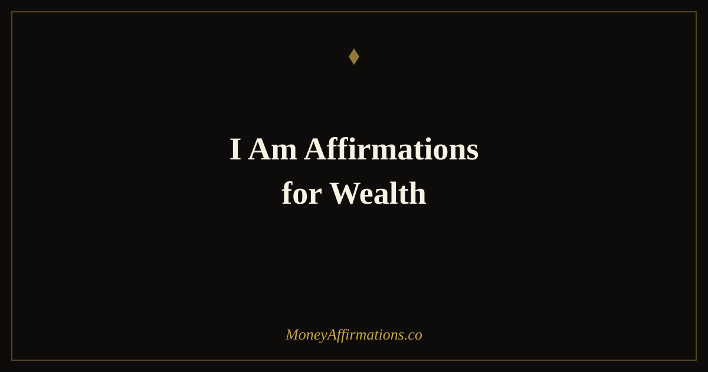

I Am Affirmations for Wealth: 35 Identity Statements to Build Riches

Of all the affirmation structures available, "I am" is the most neurologically potent. The reason is straightforward: the words "I am" are not describing an aspiration or a goal — they are making an identity claim. They tell the brain who you are, not what you want. And the brain, once given a consistent identity signal, works diligently to produce behaviour that matches it. These 35 "I am" affirmations for wealth are designed to do exactly that: to install, one deliberate repetition at a time, a wealth identity that shapes every financial decision, risk assessment, and opportunity evaluation you make. The shift from "I want to be wealthy" to "I am a person who builds wealth" is not merely semantic. It is one of the most consequential mental moves available in personal finance.
What are I am affirmations for wealth?
I am affirmations for wealth are identity-level statements that place a wealthy self-concept at the centre of your financial psychology. Each statement begins with "I am" and asserts a specific quality, behaviour, or characteristic associated with financial success — wealth-building discipline, generous stewardship, confident earning, strategic thinking. Repeated consistently, they work to replace limiting financial identities ("I am not good with money," "I am someone who always struggles") with ones that generate wealth-positive behaviour.
For the broader framework that supports identity-level wealth work, explore the wealth affirmations collection — a comprehensive resource for everyone building a serious, lasting relationship with financial success.
35 I am affirmations for wealth
- I am a person who builds wealth consistently, month after month, with patience and purpose.
- I am financially free, and every decision I make reflects that identity.
- I am a skilled and confident earner who creates real value and is rewarded appropriately for it.
- I am a wise steward of money, managing it with care, intention, and long-term vision.
- I am someone who attracts financial opportunity through my skills, reputation, and genuine relationships.
- I am wealthy, and my wealth supports not only my own life but the lives of the people I love.
- I am a generous person who uses financial abundance to contribute meaningfully to the world.
- I am a disciplined saver and a thoughtful investor who grows wealth across every life stage.
- I am someone who earns more each year because I consistently develop my skills and expand my value.
- I am at peace with money and with the process of building financial security for myself and others.
- I am the kind of person wealth flows to easily, because I create the conditions that welcome it.
- I am financially confident in every negotiation, conversation, and decision that involves money.
- I am a person who honours their financial commitments to themselves without exception.
- I am aligned with prosperity, and prosperity is aligned with me.
- I am someone who thinks long-term about money, delaying short-term comfort for long-term freedom.
- I am financially literate and I continue to expand my understanding of how money works.
- I am a multiple-income earner, always building new streams alongside the ones I already have.
- I am deserving of financial abundance and I receive it without guilt or hesitation.
- I am the kind of person who finishes what they start financially and sees their plans through to completion.
- I am clear about my financial values and every pound I spend or save reflects them honestly.
- I am a wealth builder, and this identity shapes every small decision I make each day.
- I am secure, stable, and growing financially, and each month confirms this reality further.
- I am a person who bounces back from financial setbacks with resilience and practical wisdom.
- I am confident in my earning potential, and I take consistent action to realise that potential fully.
- I am someone who talks about money openly, honestly, and without shame or embarrassment.
- I am a responsible financial role model for the people in my life who are watching how I live.
- I am expanding my capacity for wealth every year, and there is no ceiling on what I can build.
- I am a person who invests in their own development, knowing that self-investment returns more than any other.
- I am someone who lives below my means today so that I can live beyond my dreams tomorrow.
- I am financially courageous, willing to take calculated risks in pursuit of meaningful wealth.
- I am grateful for the wealth I have already built and excited about how much more is on its way.
- I am a person whose relationship with money gets healthier, clearer, and more abundant with every passing year.
- I am fully committed to the long game of wealth, and I do not let short-term noise derail my long-term direction.
- I am wealthy in every meaningful sense — financially, relationally, and in terms of the life I am living.
- I am the architect of my financial future, and I build it deliberately, intelligently, and without apology.
How to use these affirmations
Choose eight to ten statements that most directly address the wealth identity you are working to establish. If you are currently held back by a belief that you are "not good with money," statements 8, 10, 13, and 16 will be particularly relevant. If your limitation is around earning confidence, focus on 3, 9, 11, and 24. The statements you resist most strongly — the ones that produce the most internal pushback — are often the most important ones to work with, provided you can find a genuinely believable version of them to begin with.
Use your chosen statements every morning for a minimum of thirty days without changing the selection. Consistency of repetition is what drives identity-level change; variety too early in the process undermines the depth of encoding you are trying to achieve. After thirty days, review which statements now feel genuinely true, and replace them with statements that still feel like a stretch. This graduation process — from "aspirational but possible" to "simply true" — is the most reliable indicator that the work is taking hold.
Why "I am" is the most neurologically powerful affirmation structure
Identity-based motivation is one of the most reliably documented phenomena in behavioural psychology. The seminal work of Carol Dweck on growth mindset, James Clear's synthesis in identity-based habit formation, and decades of self-concept research in clinical psychology all converge on the same insight: the behaviours most likely to persist long-term are those that are anchored to identity rather than outcome.
When a person believes "I am a wealth builder," they do not need to motivate themselves to check their budget, save a portion of each paycheque, or research an investment — these activities flow naturally from who they believe themselves to be. The identity does the motivational heavy lifting. When a person believes "I am someone who struggles with money," the same activities feel foreign, effortful, and fundamentally inconsistent with their self-image, which is why they rarely persist.
Neurologically, "I am" statements activate the default mode network — the brain region associated with self-referential thinking, autobiographical memory, and identity construction. When a statement about identity is repeated consistently in a calm, receptive state, it is processed alongside genuine memories and deeply held beliefs, which gives it unusual influence over subsequent automatic thought patterns. This is why identity-level affirmations tend to produce more durable behaviour change than goal-oriented ones: they are encoded in the part of the brain where character is stored, not just in the prefrontal cortex where plans are formed.
Tips to make them work faster
- Act immediately after affirming. The most powerful use of "I am a wealth builder" is to follow it immediately with one wealth-building action, however small. The action turns the identity statement into evidence, which accelerates the belief-formation process.
- Use them in front of a mirror. Holding eye contact with yourself while delivering an identity affirmation is uncomfortable at first precisely because it bypasses the part of the mind that wants to deflect. That discomfort is a sign the statement is working at a deep level.
- Stack them into an existing habit. Attach your morning affirmation practice to something you already do without fail — making coffee, brushing your teeth, a morning walk. Habit stacking removes the need for daily willpower to begin the practice.
- Write your identity statement on your banking app or wallet. A small reminder of your chosen wealth identity at the moment of financial decision-making — the moment you are about to spend — can interrupt automatic behaviour and return you to your intentional self.
- Seek evidence deliberately. Once per day, name one way you behaved like the wealthy person you are affirming. "I chose not to buy something impulsively today" counts. Evidence-gathering turns the affirmation from a hope into a track record.
Frequently Asked Questions
Why are "I am" statements more powerful than other affirmations?
The phrase "I am" activates identity-level processing in the brain rather than goal-level processing. When you say "I want to be wealthy," your brain encodes that as a future desire — something separate from your current self. When you say "I am wealthy," the brain is invited to consider that statement as a description of who you are right now, which activates a different, more powerful set of neural processes. Identity-based beliefs are more behaviourally influential than goal-based beliefs because we consistently act in ways that align with who we believe ourselves to be. Every "I am" statement for wealth is essentially a vote cast for a new financial identity.
What wealth beliefs should I target with I am affirmations?
The most productive beliefs to target are the ones that currently limit you most. Common wealth-limiting identities include: "I am not good with money," "I am not the kind of person who earns a lot," "I am always struggling financially," and "I am not deserving of wealth." The opposite of each of these is a productive "I am" target. You can identify your own by noticing what you say to yourself or others about your financial situation — the beliefs embedded in those habitual descriptions are the ones most worth replacing. Start with statements that are a small stretch from where you are, not a leap to an identity that feels entirely implausible.
How do I make I am affirmations feel believable when I am not wealthy yet?
The most reliable approach is to use bridging language and to choose statements that are true in some meaningful sense right now, even if not in the fullest sense yet. "I am becoming a person who builds wealth consistently" is genuinely true if you are reading this and working on your mindset. "I am a good steward of the money I have" may be entirely honest. "I am developing the habits and beliefs of a wealthy person" is accurate if you are doing exactly that. Over time, as you take actions that align with the wealthy identity you are building, the statements that once felt like a stretch will begin to feel simply true — not because of the affirmations alone, but because you will have evidence to support them.
Identity is the foundation of everything that follows in financial life. For the full range of affirmations that support wealth at every level — from belief to behaviour to income strategy — visit the wealth affirmations collection and build the self-concept that makes financial success not an aspiration but a natural expression of who you are.